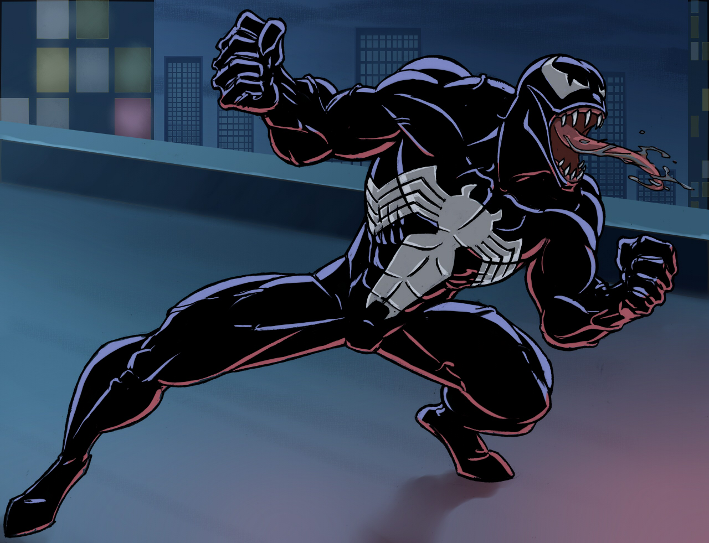
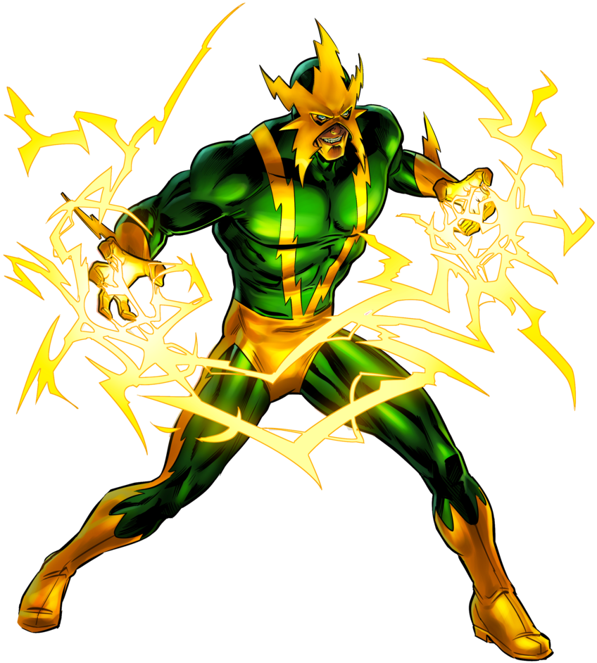

Spider-Man Suits(Costumes)!
Spider-Man have used different cool suits. Here are some of his best suits of all time.
Original Suit
The suit's overall design is based primarily on the Classic Suit,
but with several modifications. Notably, the red portions of the suit are lined with raised silver webbing and the eyes are more angular. Additionally, the red
spider symbol on the back of the suit is that of a realistic spider rather than a stylized circular symbol as on the Classic Suit and the other variants based off
of it. The red sections of the suit are also colored in a much stronger shade of red as compared to the other variations of the Classic Suit. And unlike most suits,
this suit lacks the shutter eyes, staying true to its appearance in the film trilogy.
{kind=link}
Venom
Venom is a symbiote. Brock is the man who adquired the powers
of the symbiote.
{kind=link}
Dr. Octopus
 Best known as Otto Octavious. He's a great scientist
who adquire robotic tentacles, and is a great villian of spider-man.
Best known as Otto Octavious. He's a great scientist
who adquire robotic tentacles, and is a great villian of spider-man.
Electro
Max is a former electrical engineer at Oscorp who had
idolized Spider-Man, but was transformed into an extremely powerful living electric capacitor after a freak accident, growing power-hungry and
obsessed with defeating and killing his former idol. .
{kind=link}